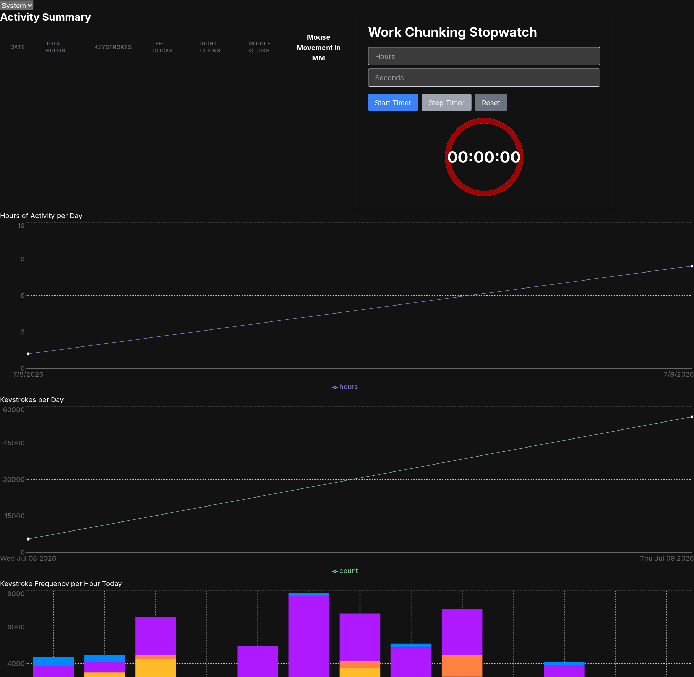
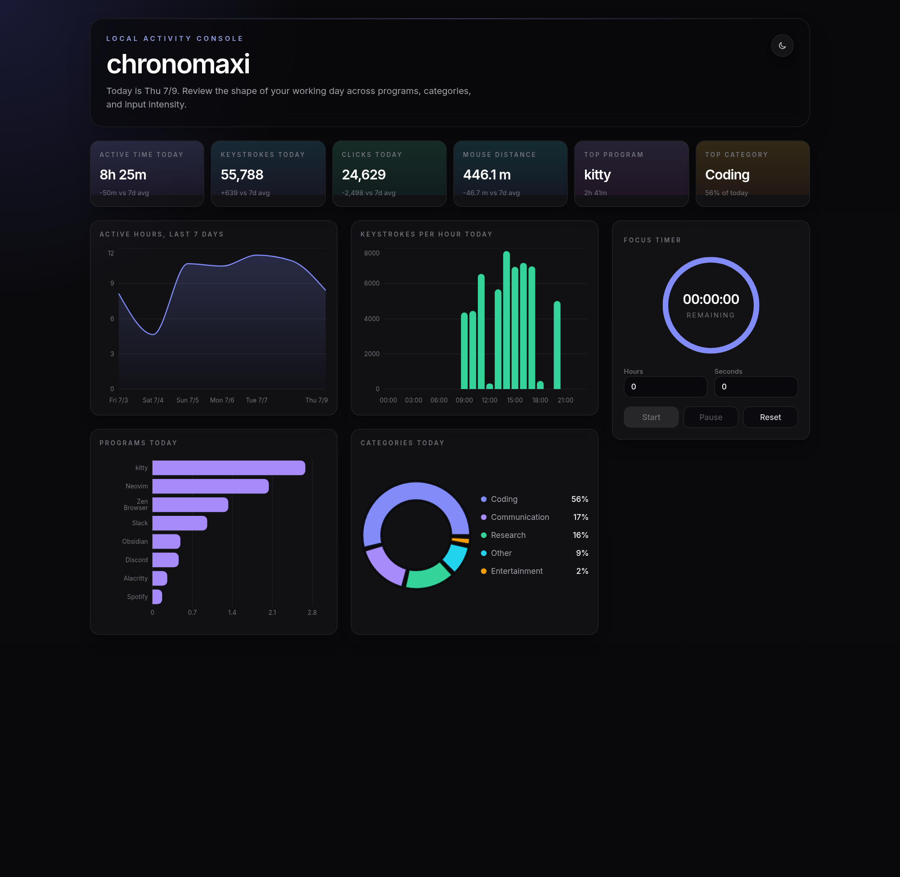
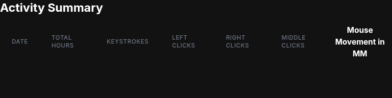
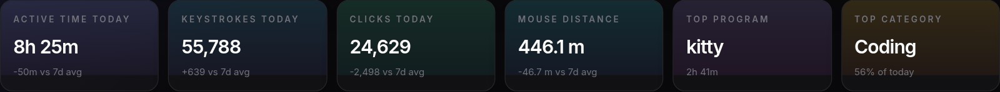

1 Dashboard, side by side
Full-page captures of /home on each app, taken back to back.
Before (085ec7a, port 3002) frontend/src/app/home

- "Activity Summary" table renders headers only, zero rows in
<tbody> - "Hours of Activity per Day" line chart is a single straight segment between two points
- "Keystrokes per Day" line chart is the same dead two-point ramp
- Work Chunking Stopwatch shows a static
00:00:00, no dashboard chrome around any widget
After (uncommitted, port 3001) frontend/src/app/home

GetActivityData contract:
- Six stat cards (active time, keystrokes, clicks, mouse distance, top program, top category) each with a 7-day delta
- "Active Hours, Last 7 Days" area chart populated across all 7 days
- "Keystrokes Per Hour Today" bar chart with 24 hourly buckets
- Program bars, category donut, and a working Focus Timer widget, all dark-themed
Before, closeup empty tbody

ActivitySummary.tsx; no map over any data at all.After, closeup stat card row

DailySummary/ProgramStat/CategoryStat shapes and rendered as stat cards with 7-day-average deltas.2 Architecture: before vs after
Same three-tier shape (tracker, sqlite, frontend), but the contract between tiers and the tracker's own capture loop changed completely.
Before
tracker (Rust)
X11-only via
xdotool/xprop; Command output .unwrap()'d directly, panics on any non-X11 session; ends and re-inserts a log row every 100ms tick regardless of window change (~10 rows/sec)↓
sqlite (db.sqlite via Prisma)
Flooded with near-duplicate rows every tick
↓
logHelpers.ts (untyped)
getSummaryData() reduces logs into a Record<date, {...}> then destructures top-level fields that were never on that shape, all undefined. Return type inferred, not contract-checked.↓
Charts.tsx / ActivitySummary.tsx
Object.entries() called on fields that are already arrays; Activity Summary <tbody> hardcoded empty; stopwatch input handlers unguarded parseIntAfter
tracker (Rust)
Runtime-selected
CaptureBackend: Hyprland IPC (hyprctl) when HYPRLAND_INSTANCE_SIGNATURE/Wayland is present, X11 (xdotool) otherwise; no panics; span-based aggregation checkpoints every 40s (CHECKPOINT_SPAN_SECONDS), capped at 60s (~1 row/40s)↓
sqlite (db.sqlite via Prisma)
Same schema, orders of magnitude fewer writes per session
↓
GetActivityData (lib/activity-types.ts)
Single typed contract:
days, today, hourlyToday, programsToday, categoriesToday, generatedAt. Server produces exactly this shape, UI consumes exactly this shape.↓
tRPC router + server actions
activityRouter.getAll and getActivityDataForCurrentUser() both return the typed contract; no ad hoc reshaping in components↓
Redesigned dashboard
Stat cards, populated area/bar charts, category donut, working Focus Timer, dark theme throughout
3 Bug fix table
Concrete symptoms traced to root cause in the pre-overhaul code, and how the overhaul closes each one.
| Bug | Symptom | Root cause (085ec7a) | Fix (current) |
|---|---|---|---|
| Empty tbody | Activity Summary table shows headers, zero data rows | ActivitySummary.tsx renders a hardcoded empty <tbody></tbody>, no map over any prop |
Replaced the table with typed stat cards bound to data.today / data.days |
| getSummaryData undefined | Any consumer of summary totals gets undefined |
logHelpers.getSummaryData() reduces logs into a Record<date, {...}>, then destructures top-level totalHours/keystrokes/etc off that record, fields that never existed at that level |
getStatsForLogs now returns the typed GetActivityData shape directly; no intermediate untyped reduce-then-destructure step |
| Object.entries() on array | Bar chart series keys become numeric string indices instead of program names | Charts.tsx calls Object.entries(data.keystrokeFrequencyPerHourToday) where that field is already an array (built via .map() in logHelpers) |
hourlyToday: HourlyStat[] is consumed directly as an array, no entries/reshape step |
| Timer NaN | Stopwatch hour/second inputs can show NaN |
Timer.tsx input onChange={(e) => setHours(parseInt(e.target.value))}, unguarded parseInt on a controlled input, empty/invalid input yields NaN straight into state |
New Focus Timer widget parses with explicit numeric guards and safe defaults before arithmetic |
| Port mismatch | Auth callback / redirect assumptions point at the wrong origin | .env.example hardcodes NEXTAUTH_URL="http://localhost:3000", default Next.js dev port, while the app is conventionally run on 3001 |
.env.example updated to NEXTAUTH_URL="http://localhost:3001", matching the actual dev port |
| No Wayland support | Tracker panics immediately outside an X11 session | Only backend is xdotool/xprop shelled out via Command, output .unwrap()'d with no error handling |
CaptureBackend enum with Hyprland and X11 variants, selected at runtime via HYPRLAND_INSTANCE_SIGNATURE/XDG_SESSION_TYPE, Hyprland path uses hyprctl activewindow -j |
| Row flood | sqlite grows fast, every query scans far more rows than the actual activity warrants | save_to_db_every_n_seconds() calls end_current_log().unwrap() on every 100ms loop tick regardless of window change, ending and restarting a log row each time (~10 rows/sec) |
Span aggregation: a log only ends on window change, idle change, a 60s hard cap, or a 40s checkpoint (MAX_SPAN_SECONDS / CHECKPOINT_SPAN_SECONDS), roughly 1 row per 40s of continuous activity |